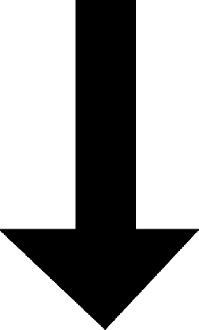

Chapter 8
Mitosis & Meiosis
By Katie Katz
Mitosis
The process of cell division in which the daughter cells produced are identical to the parent cell.
- Number of daughter cells: 2
- Number of divisions: 1
- Diploid daughter cells
- Chromosome Number: 46 (consistent)
- Used when organisms undergo:
- Growth
- Development
- Repair
- Asexual Reproduction
- Type of cell produced: Autosome
- Daughter Cells: Genetically Identical
| Advantages | Disadvantages |
|
|
The Cell Cycle
The cell cycle is the repeating set of events in the life of a cell. It includes interphase and cell division.
-
Interphase
- Defined as the time between cell divisions.
-
Contains 3 phases:
- G1 Phase:
During gap/growth phase 1, offspring cells grow to mature size. - S Phase:
During synthesis phase, the cell's DNA is copied, or synthesized. - G2 Phase:
During gap/growth phase 2, the cell prepares for cell division.
- G1 Phase:
- Cells can exit the cell cycle during interphase, usually from the G1 phase, and enter what is known as the G0 phase, which is when a cell stops dividing.
-
Cell Division
-
Contains 2 phases:
-
Mitosis
- Mitosis is the division of the nucleus of a cell.
-
It is a continuous process that is divided into four phases:
- Prophase:
DNA coils into chromosomes. The nucleolus and nuclear membrane break down and disappear. Centrosomes appear and move toward poles. Spindle fibers appear. - Metaphase:
Chromosomes line up at midline of the cell. Kinetochore fibers are now connected to the chromosomes, and polar fibers extend from centrosome to centrosome. - Anaphase:
Chromotids are separated and slowly pulled to opposite poles. - Telophase:
Opposite of prophase; Spindle fibers disassemble, nucleolus and nuclear membrane reform, and DNA uncoils into chromatin. Cytokinesis begins.
- Prophase:
-
Cytokinesis
- Cytokinesis is the division of the cytoplasm of a cell.
- Although it begins during telophase, it is considered its own phase of cell division.
-
The process differs between animal and plant cells.
- Animal Cells:
The cell membrane pinches inward between the two poles. The area that pinches in is referred to as the cleavage furrow. Microfilaments in the cleavage furrow divide the cell into two offspring cells. - Plant Cells:
Vesicles from the Golgi apparatus join at the midline of the dividing cell to form a cell plate. Eventually, a cell wall forms from this cell plate, splitting the cell into two offspring cells.
- Animal Cells:
- In both animal and plant cells, offspring are approximately equal in size, and each contains an identical copy of the parent's chromosomes as well as half of the parent's cytoplasm and organelles.
-
Mitosis
-
Contains 2 phases:
Control of Cell Division
-
A cell spends most of its time in interphase; only certain checkpoints can move it along in the cell cycle.
-
Checkpoint 1: Cell Growth Checkpoint
Proteins determine whether or not a cell has grown to a suitable size for division. If it has, the proteins end G1 phase and send the cell into S phase. Some cells enter G0 phase here. -
Checkpoint 2: DNA Synthesis Checkpoint
Enzymes check if DNA has successfully been duplicated; if so, the enzymes signal the cell to begin mitosis. -
Checkpoint 3: Mitosis Checkpoint
Proteins ensure that the cell has finished mitosis. If so, the proteins signal the cell to enter G1 phase again.
-
Checkpoint 1: Cell Growth Checkpoint
- Sometimes, there are mutations in certain genes that control proteins.
- If the proteins that control cell checkpoints cannot function properly, the cell cycle will go unchecked.
- This disruption of the cell cycle is known as cancer.
- Cancer is the uncontrolled growth of cells; cancer cells do not respond to the body's control mechanisms.
Mitosis

Mitosis in a real cell:
(hover to view)
Meiosis
The process of cell division in which the daughter cells produced are not identical to the parent cell.
- Number of daughter cells: 4
- Number of divisions: 2
- Haploid daughter cells
- Chromosome Number: 46 in parent, 23 in daughter (inconsistent)
- Used to produce gametes
- Type of cell produced: Germ cell
- Daughter Cells: Genetically Unidentical
| Advantages | Disadvantages |
|
|
Meiosis: Process

Meiosis consists of interphase as well as two cell divisions, meiosis I and meiosis II.
-
Interphase:
This process is the same as interphase in mitosis; it consists of a G1 phase, an S phase, and a G2 phase during which the cell prepares for division and the DNA is duplicated. -
Meiosis I
- Meiosis I is the first cell division of meiosis.
- It is very similar to the process of mitosis.
-
Meiosis I consists of 5 phases:
- Prophase I:
DNA coils into chromosomes. Synapsis, the pairing of homologous chromosomes to form tetrads, occurs. Portions of chromatids may break off and attach to the adjacent chromosome of the tetrad in a process called crossing-over.The nuclear membrane and nucleolus disassemble. Spindle fibers appear. - Metaphase I:
The tetrads line up randomly at the midline of the dividing cell. Spindle fibers from each pole attach to the centromere of each homologue. - Anaphase I:
Each homologue moves to a different pole. This random separation of homologous chromosomes is called independent assortment. - Telophase I:
The chromosomes reach the poles, and cytokinesis begins. Spindle fibers disassemble. Note that the nucleolus and nuclear membrane sometimes, but not always, reform. - Cytokinesis I:
This process is similar to cytokinesis in mitosis; depending on the type of cell, either a cleavage furrow or cell plate is formed, and eventually the cell splits.
- Prophase I:
- Meiosis I produces two new cells, each with a haploid number of chromosomes, however there are two copies (as chromatids) of each chromosome in the offspring.
-
Meiosis II
- Meiosis II is the second cell division of meiosis.
- It occurs in each of the new cells created in meiosis I.
- Since there is already 2 copies of each chromosome in the new cells, there is no DNA replication beforehand.
-
Meiosis II consists of 5 phases:
- Prophase II:
If the nucleolus and nuclear membrane reformed after meiosis I, they disassemble in this phase. Spindle fibers form and begin to move the chromosomes toward the center of the cell. - Metaphase II:
The chromosomes line up at the midline of each dividing cell, with each chromatid facing an opposite pole. - Anaphase II:
The chromatids separate and move toward the poles. - Telophase II:
The chromosomes reach the poles. Spindle fibers disassemble, and the nucleolus and nuclear membrane reform. DNA uncoils into chromatin. - Cytokinesis II:
This process is similar to cytokinesis in mitosis; depending on the type of cell, either a cleavage furrow or cell plate is formed, and eventually the cell splits.
- Prophase II:
Devolopment of Gametes
- The only cells that reproduce through meiosis are those that produce gametes.
- Cells that produce gametes undergo meiosis in the reproductive organs.
- The formation of gametes differs slightly in human males and females.
-
Production of Gametes:
-
Spermatogenesis:
- In human males, meiosis occurs in the testes to form gametes called sperm cells or spermatozoa.
- A diploid reproductive cell divides meiotically. The four daughter cells are called spermatids.
- Each spermatid develops into a mature spermatozoa.
-
Oogenesis:
- In human females, meiosis occurs in the ovaries to form gametes called egg cells, or ova.
- A diploid reproductive cell divides meiotically.
- In cytokinesis I and II of oogenesis, cytoplasm is divided unevenly between daughter cells.
- The products of oogenesis are 1 ova (mature egg cell) and 3 polar bodies. Polar bodies receive very little cytoplasm and eventually degenerate.
-
Spermatogenesis: